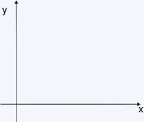

O Flexbox (Flexible Box Module) ou "Caixa Flexível" é um conceito do CSS para estilizarmos diversas propriedades de maneira mais rápida e eficaz.
A propriedade display: flex deve ser a primeira a ser declarada no CSS. A partir dela é que o CSS vai entender que precisa estilizar o conteúdo do contêiner com a Caixa Flexível (Flexbox).
Exemplo:
| Propriedade | Valor |
|---|---|
| flex-direction | row |
| justify-content | flex-start |
| align-content | flex-start |
Sempre que falarmos de Flexbox devemos lembrar que todas as operações realizadas nele serão relacionadas a dois eixos: principal e secundário. Para entendermos melhor, devemos lembrar que o eixo X se refere ao sentido horizontal e o eixo Y ao sentido vertical.
Não esqueça: Quando falarmos em ROW, estaremos nos referindo a linha (eixo x) e quando falarmos COLUMN, estaremos nos referindo a coluna (eixo y).
A propriedade flex-direction refere-se à direção dos itens flexíveis. Nesta propriedade veremos 4 diferentes valores.
Observação: devemos lembrar sempre que se o item não for flexível, a propriedade não terá efeito.
Quando utilizarmos esta propriedade, os itens dentro da caixa flexível estarão em linha. Observe que como nosso padrão de leitura se realiza da esquerda para a direita, será esse sentido que aparecerá no flexbox.
Para facilitar a visualização, enumeramos de 1 a 5 cada caixinha dentro do flexbox.
Exemplo:
Quando utilizarmos esta propriedade, os itens dentro da caixa flexível estarão em linha, porém como há o reverse, ele se iniciará do fim para o começo (da direita para a esquerda). Podemos assimilar ele as leituras de mangás, pois possuem a mesma direção que os Japoneses utilizam.
Exemplo:
Quando utilizarmos esta propriedade, os itens dentro da caixa flexível estarão em coluna, a esquerda, de cima para baixo.
Exemplo:
Quando utilizarmos esta propriedade, os itens dentro da caixa flexível estarão em coluna, porém como está com o reverse, ele se iniciará a esquerda de baixo para cima.
Exemplo:
A propriedade justify-content pode ser usada para justificar o centeúdo do elemento contêiner em seu eixo primário, ou seja, eixo x (row, row-reverse) ou eixo y (column, column-reverse).
O valor "center" vai alinhar o conteúdo ao centro do eixo primário.
Exemplo:
O valor "flex-start" vai alinhar o conteúdo ao início do eixo primário.
Exemplo:
O valor "flex-end" vai alinhar o conteúdo ao fim do eixo primário.
Exemplo:
O valor "space-between" vai distribuir uniformemente o conteúdo no contêiner de alinhamento no eixo primário, alinhando o primeiro item a borda inicial e o último item a borda final do contêiner, contendo o mesmo espaçamento entre todos os itens.
Exemplo:
O valor "space-around" vai distribuir o conteúdo no contêiner de alinhamento no eixo primário. O espaçamento entre cada caixinha será o mesmo, porém nas bordas, antes da primeira caixinha e depois da última caixinha, será metade do espaço que há entre as caixinhas.
Exemplo:
O valor "space-evenly" vai distribuir o conteúdo no contêiner de alinhamento no eixo primário. O espaçamento entre todas as caixinhas e as bordas inicial e final serão exatamente iguais.
Exemplo:
O valor "initial" é a palavra-chave usada para definir uma propriedade ao CSS com seu valor padrão.
O valor "inherit" é a palavra-chave usada para especificar que uma propriedade deve herdar seu valor de seu elemento pai.
A propriedade align-itens refere-se ao alinhamento padrão para os itens dentro do flexbox. Ela irá atuar no eixo transversal em relação ao eixo principal, unindo de um lado ao outro, da esquerda para a direita. Nesta propriedade veremos 6 diferentes valores.
O valor "normal" é adaptável e poderá se comportar como start ou stretch, porém a maioria das vezes o veremos como stretch. Devemos sempre lembrar de deixar as caixinhas contidas no contêiner como heigh: auto, assim veremos a aplicação do valor.
Exemplo:
O valor "stretch" vai adaptar as caixinhas, as esticando, a altura do contêiner. Devemos sempre lembrar de deixar as caixinhas contidas no contêiner como heigh: auto, assim veremos a aplicação do valor. stretch.
Exemplo:
O valor "center" vai centralizar as caixinhas no centro do eixo As caixas de margem dos itens flex são centralizados ao longo da linha do eixo, à esquerda.
Exemplo:
O valor "flex-start" alinhará as caixinhas no início do contêiner.
Exemplo:
O valor "flex-end" alinhará as caixinhas no fim do contêiner.
Exemplo:
O valor "baseline" posiciona as caixinhas na linha de base do contêiner. Observe que as caixinhas que contém o texto estão alinhadas pelo início do texto.
Exemplo:
A propriedade flex-wrap especifica se os itens flexíveis devem ser agrupados ou não, ou seja, define se os itens devem ser forçados a ficarem na mesma linha ou se podem ser quebradas em varias linhas. Se o argumento for valido, ele define a direção em que as linhas são empilhadas.
O valor "nowrap" mantém as caixinhas em uma unica linha, mesmo que para isso, seja necessário as comprimir. É o valor padrão da propriedade e especifica que os itens flexíveis não serão agrupados.
Exemplo:
O valor "wrap" especifica que os itens flexíveis serão agrupados se necessário, ou seja, as caixinhas poderão ser divididas em mais de uma linha.
Exemplo:
O valor "wrap-reverse" especifica que os itens flexíveis serão agrupados, se necessário, na ordem inversa, ou seja, se comporta da mesma maneira que o wrap, dividindo em mais de uma linha as caixinhas, porém a linha ocorre na direção contrária.
Exemplo:
A propriedade flex-flow é uma junção das propriedades flex-direct e flex-wrap, por isso poderemos juntas os comandos de ambas em diversas combinações (flex-flow: row nowrap; flex-flow: row-reverse nowrap; flex-flow: column nowrap; flex-flow: column-reverse nowrap; flex-flow: row wrap; flex-flow: row-reverse wrap; flex-flow: column wrap; flex-flow: column-reverse wrap; flex-flow: row wrap-reverse; flex-flow: row-reverse wrap-reverse; flex-flow: column wrap-reverse; e flex-flow: column-reverse wrap-reverse;).
Mostraremos aqui um exemplo para melhor compreensão da propriedade.
O valor "column wrap-reverse" refere-se ao flex-direction column e o flex-wrap wrap-reverse, ou seja, estamos dizendo que o sentido da direção será em coluna e que as caixinhas podem ser quebradas em mais de uma linha no sentido contrário do padrão que estamos habituados.
Exemplo:
A propriedade align-content especifica como as linhas flexíveis são distribuídas ao longo do eixo cruzado em um flexbox. No layout flexbox, o eixo principal está no flex-direction (o padrão é 'linha', horizontal) e o eixo transversal é perpendicular ao eixo principal (o padrão é 'coluna', vertical).
Dica: Utilize a propriedade justify-content para alinhar os itens no eixo principal.
O valor "stretch" é o padrão da propriedade. As linhas se esticam para ocupar o espaço restante.
Exemplo:
O valor "center" empacota as caixinas em direção ao centro do flexbox.
Exemplo:
O valor "flex-start" empacota as caixinhas no início do flexbox.
Exemplo: